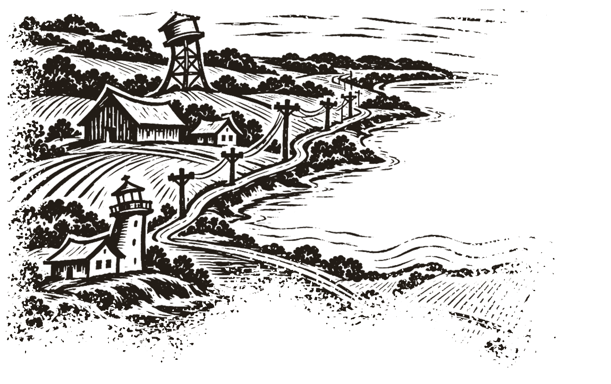
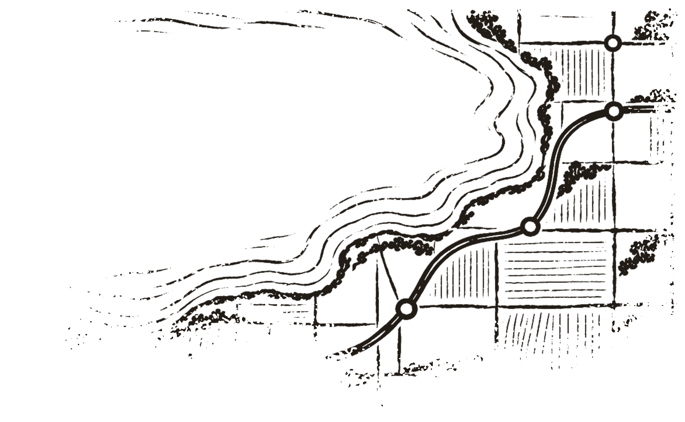
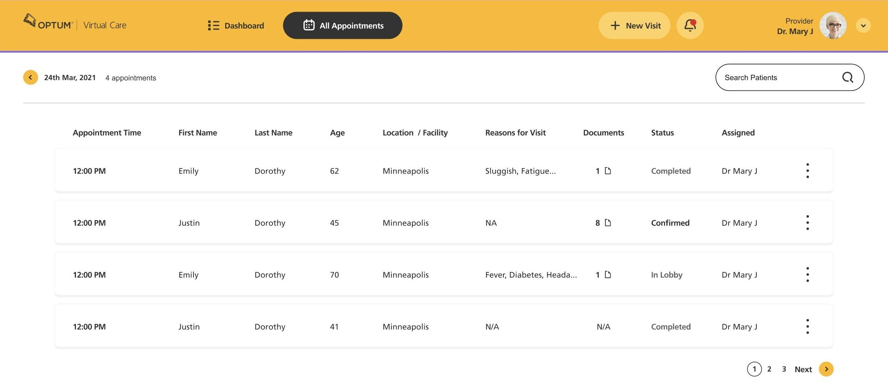
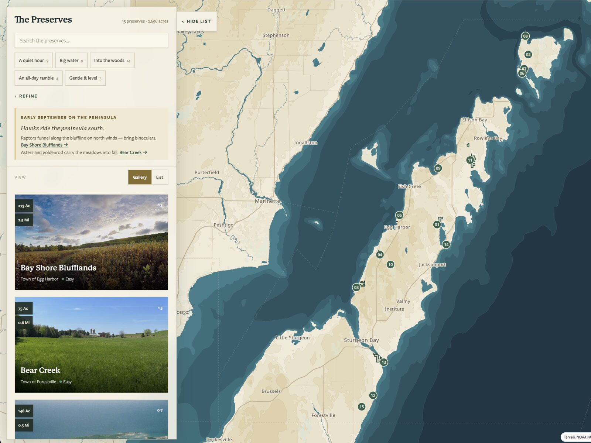
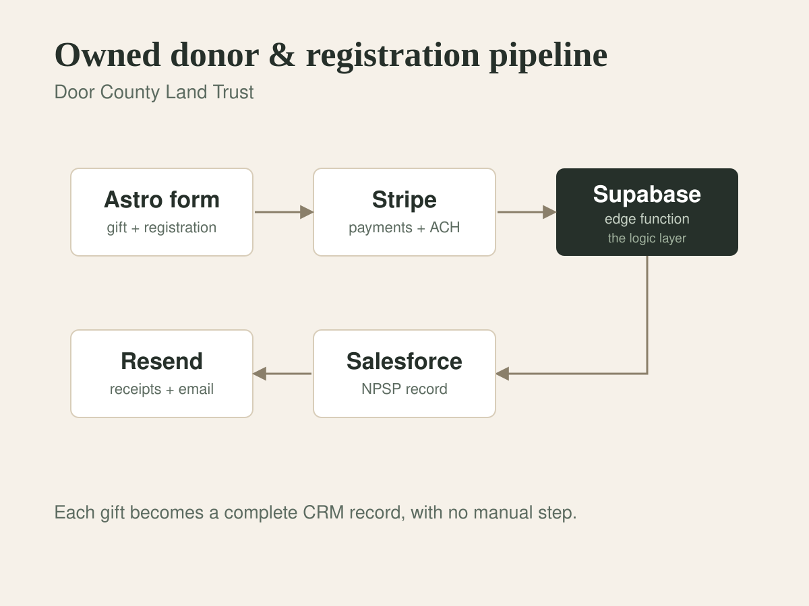

Printed for organizations that look after things
Product design · Systems · Maps
Well Made
software, set by hand & built to run
I design and build software, maps and the systems behind them, for health-care teams like Optum, data companies like NielsenIQ, and the nonprofits and land trusts that care for places. Twenty-five years of product and design-system work, start to finish.
From the job book
All work →
Optum care-plan platform
One design system across fragmented clinical tools, built from field research with nurses and coordinators.
- Client
- Optum / UnitedHealth
- Role
- Design lead
- Run
- 2021

Preserve Explorer
An interactive map of a land trust's preserves on hand-authored cartography, with no map vendor renting access to the land.
- Client
- Door County Land Trust
- Role
- Design & build
- Stack
- MapLibre · Astro

Owned donor pipeline
A rented donation platform replaced with a Stripe-to-Salesforce pipeline the staff can run themselves.
- Client
- Door County Land Trust
- Role
- Design & build
- Stack
- Stripe · Supabase